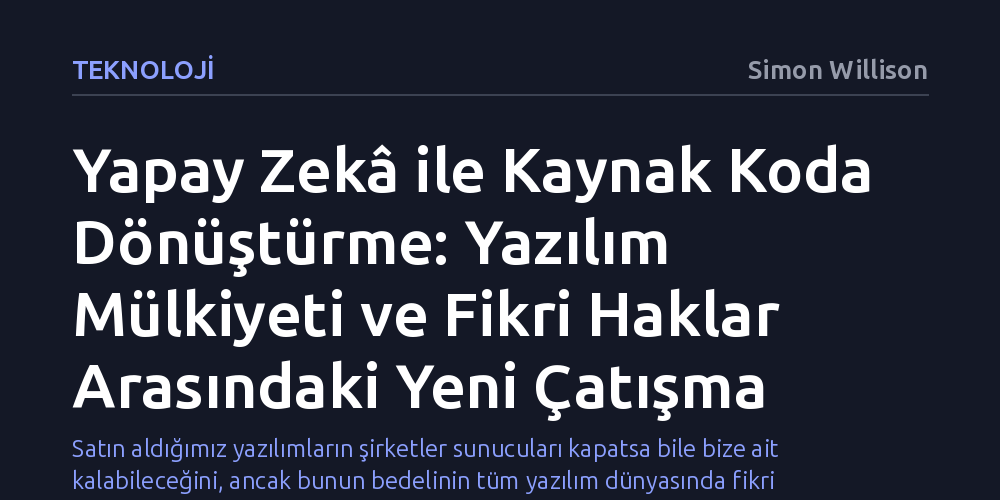

TEKNOLOJI · Simon Willison · 2026-10-15
Yapay zekâ destekli tersine mühendislik, eski oyunları kurtarıp kullanıcılara gerçek mülkiyet hakkı sağlarken ticari yazılımların kodlarını korumasız bırakıyor. Bu gelişme, oyun koruma projelerinde patlama yaratırken tüm teknoloji sektörünün fikri mülkiyet dengelerini temelden sarsıyor.
Satın aldığımız yazılımların şirketler sunucuları kapatsa bile bize ait kalabileceğini, ancak bunun bedelinin tüm yazılım dünyasında fikri mülkiyetin savunmasız kalması olacağını gösteriyor.

Son dönemde bağımsız oyun geliştiricileri ve yazılımcılar arasında dikkat çekici bir hareketlilik yaşanıyor. Büyük dil modelleri ve gelişmiş yapay zekâ sistemleri, ikili (binary) formatta derlenmiş oyun dosyalarını analiz ederek bunları kitlesel ölçekte yeniden kaynak koduna dönüştürmeye başladı. Daha önce aylar süren yoğun insan emeği ve uzmanlık gerektiren tersine mühendislik süreçleri, artık yapay zekânın karmaşık kalıpları çözebilme yeteneği sayesinde benzeri görülmemiş bir hızla otomatikleştiriliyor.
Bu gelişme, geliştiricilerin farklı oyunların mekaniklerini ve varlıklarını birbirine harmanladığı yaratıcı deneylerin önünü açıyor. Farklı dönemlere ve motorlara ait yapımların kodları açığa çıktıkça, daha önce bir araya gelmesi imkânsız görünen oyun dünyaları iç içe geçiyor ve bağımsız topluluklar arasında yeni bir deneysel üretim furyası filizleniyor.
Bu tersine mühendislik patlamasının en somut ve olumlu sonuçlarından biri, video oyunu tarihini koruma projelerinde kendini gösteriyor. Eski konsollara ya da modası geçmiş işletim sistemlerine hapsolmuş klasik yapımlar, kodlarının açığa çıkarılması sayesinde modern donanımlara hızla uyarlanabiliyor. Böylece unutulmaya yüz tutmuş veya fiziki kopyalarına ulaşılamayan yapımlar dijital ortamda kaybolmaktan kurtarılıyor.
Özellikle WebAssembly teknolojisinin yaygınlaşması, bu sürecin etki alanını doğrudan internet tarayıcılarına taşıyor. Kaynak kodu çözülen onlarca yıllık oyunlar, herhangi bir emülatör kurulumu veya karmaşık donanım ayarı gerektirmeden, doğrudan bir web sekmesi içinde akıcı biçimde çalışabilir hâle getiriliyor. Bu durum hem oyun meraklıları hem de dijital arşivciler için muazzam bir erişim kolaylığı yaratıyor.
Gelişmenin heyecan verici tarafı kadar, tüm teknoloji endüstrisini derinden sarsabilecek korkutucu bir boyutu da bulunuyor. Yapay zekânın ikili dosyaları deşifre etme kabiliyeti yalnızca eski video oyunlarıyla sınırlı değil; ticari olarak satılan herhangi bir yazılıma da aynı kolaylıkla uygulanabiliyor. Yıllarca süren araştırma-geliştirme yatırımlarıyla inşa edilmiş tescilli yazılımların kodları, kötü niyetli aktörlerin elinde dakikalar içinde savunmasız kalma riski taşıyor.
Bu durum rakiplerin birbirlerinin teknolojilerini kopyalamasını kolaylaştırırken, ücretli olarak piyasaya sürülen bir uygulamanın sahibinin rızası dışında açık kaynaklı hâle getirilmesine yol açabilir. Nitekim yazarın da belirttiği gibi, "Herkes başka yazılımları tersine derleyip dilediği gibi kullanabilir ve bunu kimse engelleyemez." Yazılım güvenliğinin kodun gizlenmesine dayandığı eski paradigma, bu yeni gerçeklik karşısında tamamen çökme tehlikesiyle karşı karşıya.
Madalyonun diğer yüzünde ise son yıllarda giderek artan tüketici mağduriyetleri yer alıyor. Konsol üreticilerinin tamamen dijital mağazalara geçiş yapması ve oyun şirketlerinin merkezi sunucuları kapatmasıyla birlikte, kullanıcıların parayla satın aldıkları oyunlar bir gecede tamamen oynanamaz hâle geliyor. Tüketiciler, sahip olduklarını sandıkları yazılımların aslında sadece geçici bir kullanım izninden ibaret olduğunu acı biçimde tecrübe ediyor.
Yapay zekâ ile kodların deşifre edilmesi, yazılım mülkiyetini şirketlerin keyfi kararlarından kurtarıp yeniden kullanıcılara devretme potansiyeli taşıyor. Şirketler kepenk indirse veya desteği kesse dahi, elindeki yazılımı bağımsız olarak çalıştırabilen kullanıcılar nihayet gerçek bir mülkiyet gücüne kavuşuyor. Bu çatışma, önümüzdeki yıllarda yazılım lisansları ve kullanıcı hakları ekseninde verilecek en büyük hukuksal ve teknolojik mücadelelerden birinin zeminini hazırlıyor.